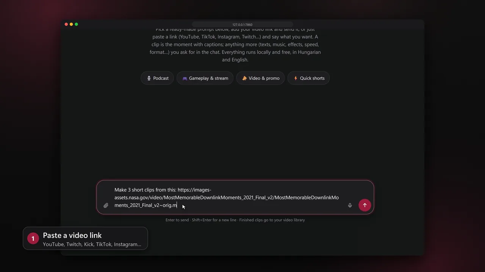
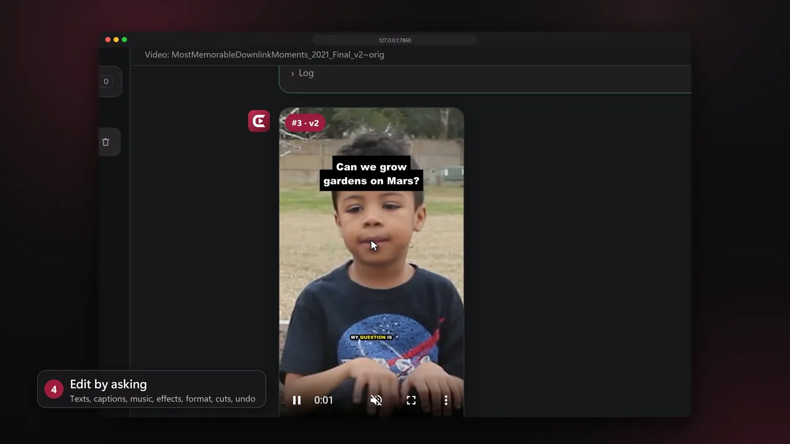

Long videos in. Viral clips out.
Clippy turns videos, podcasts and streams into vertical clips for TikTok, YouTube Shorts and Instagram Reels: the strongest hooks, word by word captions and a ready post text. Paste a link into a chat, then edit by just asking. No subscription, no upload.
One minute, in 4K. The clips are made from a public-domain NASA video; the long wait is sped up and marked.
How it works
Four steps, all in one chat window on your computer.

Paste a link
YouTube, Twitch, Kick, TikTok, Instagram and the other sites yt-dlp knows, or a file. Say how many clips you want, or pick a ready-made prompt: podcast, gameplay and stream, video and promo, quick shorts.
No link at hand? clip the latest stream of Kai Cenat finds it for you.

It finds the best moments
Clippy downloads the video, transcribes it in its own language, reads the reactions (laughter, loud moments, the stream chat) and lets a local AI rank the hooks against each other.
A live card shows every step and the time left.

Clips with captions and a post text
Vertical 9:16 with the speaker in frame (or the facecam on top and the game below for streams), dead air cut, sound mastered for phones, word by word captions.
Each clip comes with a title, a teaser, a comment question, hashtags, a cover and a B title for A/B tests.

Edit by asking, then post
put an opening text on clip 3, this song under it, quietly, make it 16:9: every change is a new version with undo, rendered in seconds.
Post to your own YouTube, Instagram and TikTok in one click, now or at a set time.
Everything a clipper needs
Built for creators and clippers who post every day.
- Hooks firstEvery candidate is scored for hook, payoff, emotion and quotability, then ranked against the others.
- A real camera operatorShot detection, face tracking and the active speaker keep the right person in the 9:16 frame.
- Captions that popWord by word, on real word timings, in the video's own language or translated on request.
- Made for streamsFacecam on top, game below; peaks found by sound, picture and chat, even without speech.
- Daily picksevery day 3 GTA VI clips: the most watched streamer moments of a game, each with a time to post.
- Watched channelsNew videos of a YouTube or Twitch channel become clips by themselves.
- Posting built inYouTube, Instagram and TikTok from your own developer apps, now or planned.
- Learns what worksViews and watch time come back onto each clip and steer the next picks.
- On your phone tooPair your phone over Wi-Fi with a QR code and use the same chats.
- Private by designLocal models, nothing uploaded, accounts and tokens stay on your computer.
Install it on your computer
About fifteen minutes, most of it downloading. Everything is free.
- SystemWindows 10 or 11, macOS or Linux
- Graphics cardNVIDIA with 12-16 GB VRAM recommended; the CPU works too, more slowly
- DiskAbout 25 GB free for the AI models and the cache
- Free toolsPython 3.12, Ollama, Git, Node.js (for YouTube)
Install the free tools in PowerShell or the Terminal app:
Then close the terminal and open a new one.winget install Python.Python.3.12 winget install Ollama.Ollama winget install Git.Git winget install OpenJS.NodeJS.LTSGet Clippy (or download the ZIP and unpack it):
git clone https://github.com/hajdu-patrik/clippy.git cd clippyRun the installer. It sets up Python, the GPU packages when an NVIDIA card is there, the AI model and the
clippycommand:The first run downloads the AI model (about 12 GB). It is safe to run again.powershell -ExecutionPolicy Bypass -File install.ps1Start it in a new terminal; the app opens in your browser at http://127.0.0.1:7860:
clippy start
Install the free tools with Homebrew:
Open the Ollama app once so it runs in the background.brew install python@3.12 git node brew install --cask ollamaGet Clippy:
git clone https://github.com/hajdu-patrik/clippy.git cd clippyRun the installer:
Without an NVIDIA card the video is encoded on the CPU; on Apple Silicon a hosted AI model is the faster choice (see below).sh install.shStart it in a new terminal:
clippy start
Install the free tools (Ubuntu and Debian shown; use your package manager elsewhere):
sudo apt install python3.12 python3.12-venv git nodejs curl -fsSL https://ollama.com/install.sh | shGet Clippy:
git clone https://github.com/hajdu-patrik/clippy.git cd clippyRun the installer:
Captions use the system fonts (DejaVu or Liberation).sh install.shStart it in a new terminal:
clippy start
Clippy can use a free hosted AI model instead of the local one. Get a free key at
Groq or Google AI Studio,
then in the .env file in the Clippy folder uncomment the matching block and paste the key. The
videos still stay on your computer; only the transcript text goes to the AI.
Run clippy restart --lan and scan the QR code with a phone on the same Wi-Fi. clippy pair gives a new code.
In the Clippy folder run git pull, then the installer again.
Questions
Is it really free?
Yes. Clippy is MIT-licensed and uses free models on your own computer: faster-whisper for speech, Qwen3-14B through Ollama for picking and editing, FFmpeg for the video. No subscription, no account, no watermark.
Does it upload my videos anywhere?
No. Downloading, transcribing, picking and rendering all happen on your computer. Only posting sends a clip, to your own accounts, when you ask for it.
How fast is it?
On an RTX card with 16 GB a 7-minute video becomes three finished clips in about seven minutes. An edit of an existing clip takes seconds.
Which languages?
Every video is transcribed and captioned in its own language. The app and the chat speak Hungarian and English, and captions can be translated between the two.
Can I use other people's videos?
Post and monetise only your own footage, footage you have permission for, or clips from an official clipping campaign. Downloading may be restricted by a platform's terms of service.
Something does not work
Run clippy status and clippy logs, and open an issue on GitHub with what you see.
Magyarul
A Clippy ingyenes, nyílt forráskódú AI klipvágó, ami a saját gépeden fut. Bemásolsz egy linket (YouTube, Twitch, Kick, TikTok, Instagram), és kész, függőleges klipeket kapsz TikTokra, YouTube Shortsra és Instagram Reelsre: a legerősebb pillanatokkal, szavanként megjelenő felirattal és kész posztszöveggel. Utána a chatben kéred a változtatást: nyitó felirat, zene, logó, effekt, formátum, visszavonás.
Telepítés: fent, az „Install” résznél válaszd ki a rendszered, és futtasd le a négy lépést
(ingyenes eszközök, letöltés, telepítő, clippy start). Erős videókártya nélkül egy ingyenes felhős
AI kulccsal is működik. Az app magyarul és angolul is beszél (clippy lang hu).